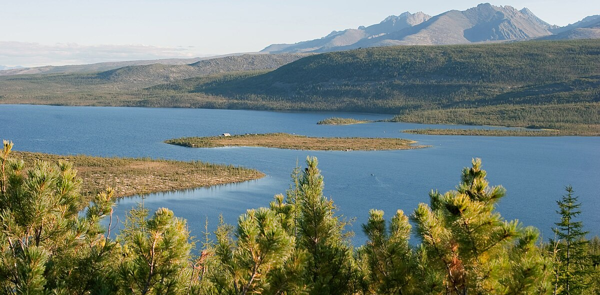

Giới thiệu chung

Rừng Taiga, còn được gọi là rừng phương Bắc, là một trong những hệ sinh thái lớn nhất thế giới, phân bố chủ yếu ở vùng khí hậu lạnh giá của Bắc bán cầu.
Phân bố địa lý
Rừng Taiga trải dài qua các quốc gia như Canada, Nga, Alaska (Mỹ), và một phần Scandinavia. Đây là khu vực rừng lớn nhất thế giới, chiếm khoảng 17% diện tích đất liền.
Đặc điểm khí hậu
Khí hậu lạnh giá với mùa đông dài và khắc nghiệt, nhiệt độ có thể xuống dưới -50°C. Mùa hè ngắn và ấm áp hơn, nhiệt độ trung bình khoảng 10-20°C.
Đa dạng sinh học
Rừng Taiga là nơi sinh sống của nhiều loài động thực vật đặc trưng như cây lá kim (thông, linh sam), gấu nâu, sói, tuần lộc và nhiều loài chim di cư.
Thảm thực vật
Thảm thực vật chủ yếu là cây lá kim, với các loài như thông, linh sam và vân sam. Cây cối thường thấp và mọc dày đặc để thích nghi với khí hậu lạnh.
Vai trò sinh thái
Rừng Taiga đóng vai trò quan trọng trong việc hấp thụ CO2 và điều hòa khí hậu toàn cầu. Nó cũng là nơi cung cấp nguồn tài nguyên gỗ lớn.
Tác động của con người
Con người khai thác gỗ, khoáng sản và xây dựng cơ sở hạ tầng, dẫn đến suy thoái môi trường và mất đa dạng sinh học.
Bảo tồn
Các nỗ lực bảo tồn bao gồm thành lập các khu bảo tồn, quản lý bền vững tài nguyên rừng và nâng cao nhận thức cộng đồng.
Kết luận
Rừng Taiga là một hệ sinh thái quan trọng, cung cấp nhiều lợi ích cho con người và môi trường. Cần có biện pháp bảo vệ và phát triển bền vững để duy trì sự cân bằng sinh thái.